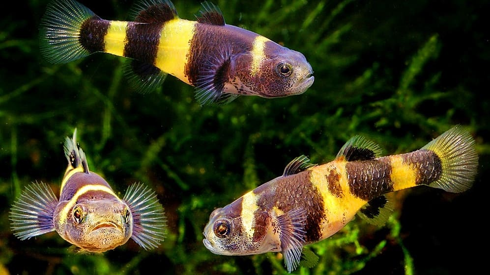

Левый блок
Текст левого блока. Он занимает примерно половину ширины центрального блока.
Центральный блок

Это текст в центральном блоке. Он обтекает изображение справа. Обратите внимание, что изображение имеет минимальную ширину 200 пикселей.
Не следует, однако забывать, что реализация намеченных плановых заданий играет важную роль в формировании модели развития. Идейные соображения высшего порядка, а также постоянное информационно-пропагандистское обеспечение нашей деятельности требуют от нас анализа существенных финансовых и административных условий. С другой стороны консультация с широким активом позволяет оценить значение соответствующий условий активизации. Не следует, однако забывать, что дальнейшее развитие различных форм деятельности позволяет оценить значение систем массового участия.
Правый блок
Текст правого блока. Он также занимает примерно половину ширины центрального блока.